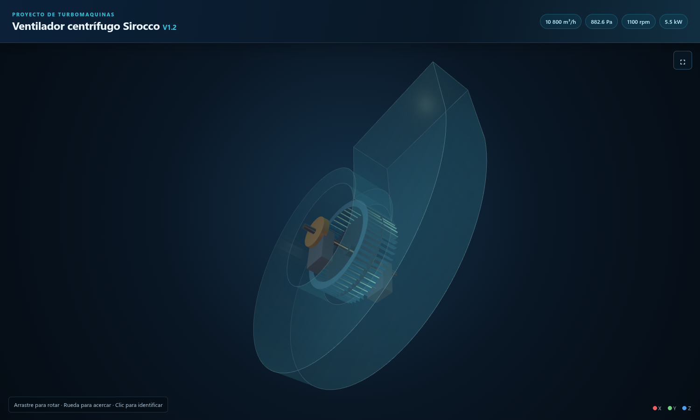
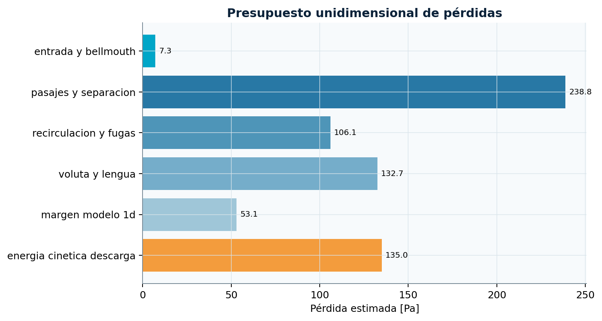
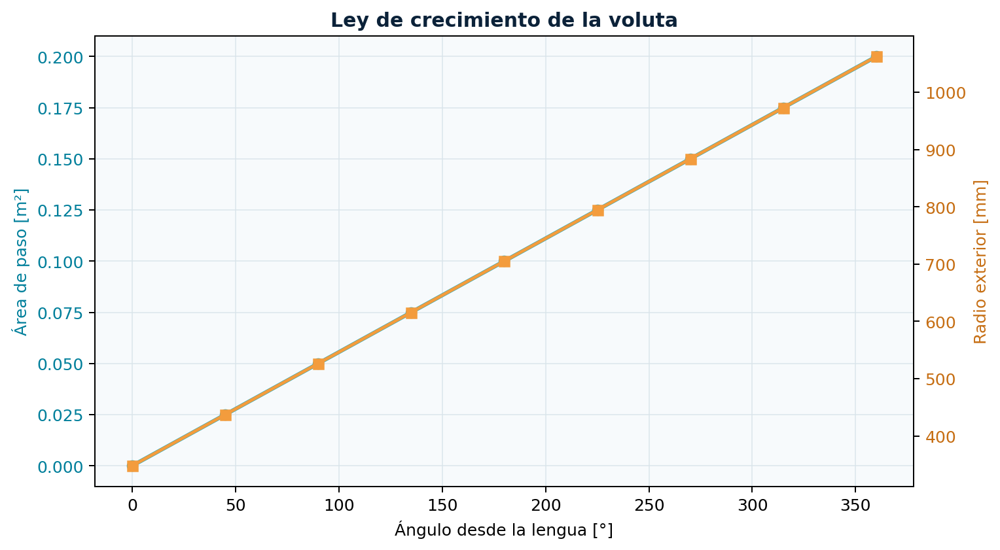
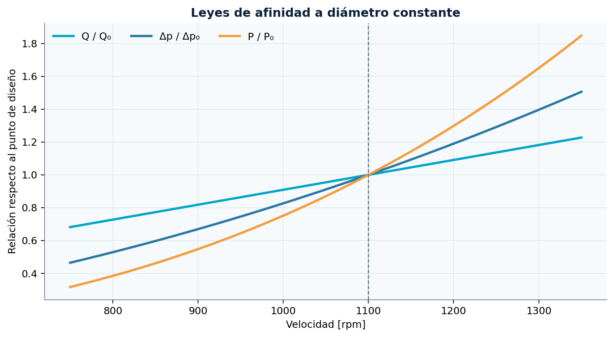
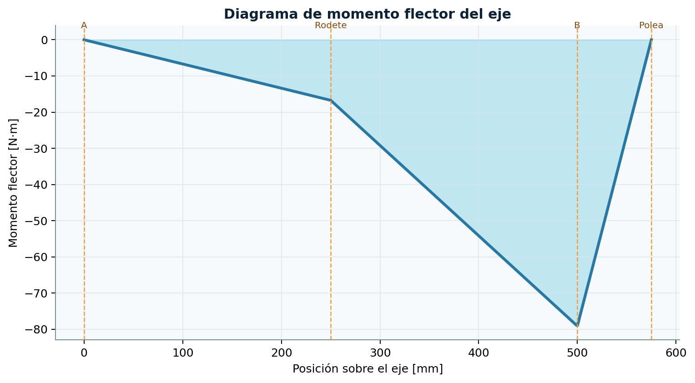
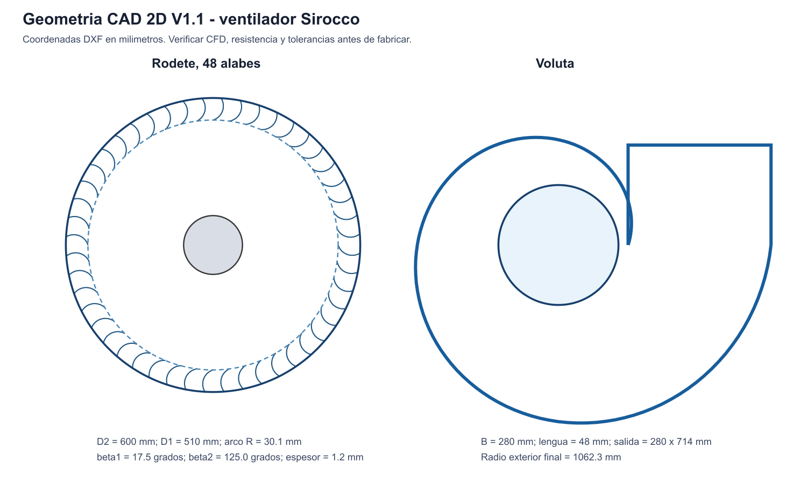
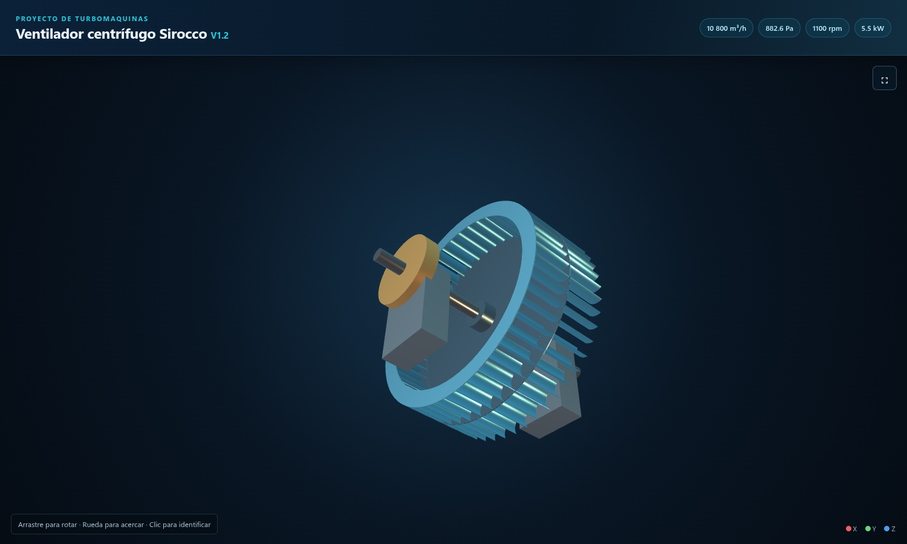
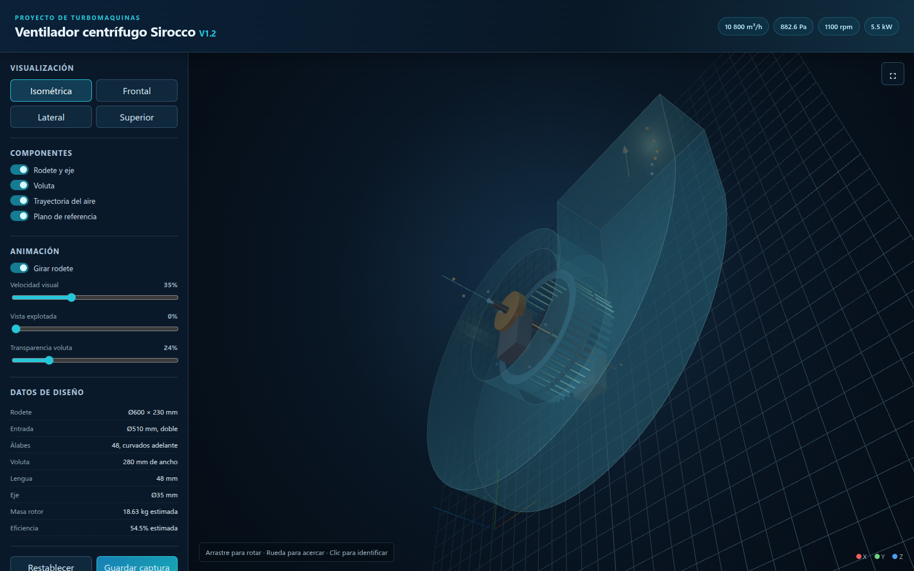

PROYECTO DE TURBOMÁQUINAS · GRUPO 2
Documentación por carpetas, ecuaciones, resultados, planos, modelo 3D, software e informe técnico

Universidad Nacional del Altiplano
Curso: Turbomáquinas · Docente: Ing. Armando Cruz Cabrera
Dilmar Humberto Siguayro Coila · Aquiles Taylor Ramos Yapo
Renzo Gabriel Mamani Galindo · Martin Calla Quispe · Abel Yovani Rivera Quispe
github.com/Aquiles-ryp360/diseno-ventilador-sirocco
Puno, 2026 · Revisión V1.2
Este manual explica cada carpeta del repositorio y reúne las
ecuaciones usadas en el predimensionamiento. La fuente vigente son los
scripts Python, las memorias de 06_calculos/ y los
resultados generados. El diseño todavía requiere CFD, análisis
estructural, balanceo y ensayo antes de fabricar.
| Parámetro | Selección vigente |
|---|---|
| Caudal | 3.0 m³/s = 10 800 m³/h |
| Presión estática | 90 mmH₂O = 882.6 Pa |
| Rodete | D2 600 mm, D1 510 mm, ancho 230 mm |
| Álabes | 48, curvados hacia adelante |
| Velocidad | 1100 rpm |
| Motor | 5.5 kW |
| Eje preliminar | 35 mm |
| Voluta | ancho 280 mm, descarga 280 × 714 mm |
00_gestionEsta carpeta conserva la organización inicial del proyecto: diagnóstico de los archivos recibidos, requisitos identificados, distribución de tareas y cronograma. No contiene resultados de ingeniería que deban usarse para fabricación.
diagnostico_carpeta.mdRegistra la revisión inicial del material del curso. Identifica el tema del Grupo 2, los entregables solicitados y la información que faltaba al comenzar. Sirve como evidencia de cómo se definió el alcance.
plan_trabajo_cronograma.mdOrganiza el proyecto en actividades: bibliografía, cálculo del rodete, voluta, pérdidas, software, semejanza, CAD, validación y presentación. La ruta crítica va desde el cierre del punto de diseño hasta la generación de geometría y la validación.
diagnostico_carpeta.md para conocer el
origen del encargo.2 diseño de turbomaquina/.06_calculos/.08_software/.09_reporte/ y
presentacion/.El predimensionamiento, CAD 2D, modelo conceptual 3D, interfaz e informe ya existen. Permanecen pendientes la simulación CFD, la verificación estructural, los detalles de fabricación y el ensayo del prototipo.
04_bibliografiaReunir las fuentes que sustentan el método de diseño y el trabajo futuro de validación. La bibliografía se concentra en ventiladores centrífugos multialabe, interacción rodete-voluta-lengua, CFD y optimización geométrica.
bibliografia_inicial.csvBase estructurada de artículos. Cada fila incluye tipo, título, autores, año, DOI, fuente, resumen metodológico y aplicación al proyecto. Actualmente contiene referencias de 2020 a 2026.
Campos principales:
doi: identificador estable para localizar la
publicación.resumen_metodologia_resultados: qué hizo el artículo y
qué reportó.aplicacion_al_proyecto: por qué la fuente es relevante
para el Sirocco.estado_del_arte_preliminar.mdResume cinco líneas de investigación:
Toda afirmación externa debe incluir autor, año y DOI o URL. Los valores calculados del proyecto deben citar el script o la memoria que los genera, no un artículo externo.
05_avancesConservar borradores y cortes parciales presentables durante el
desarrollo. Estos archivos muestran la evolución del diseño, pero no
sustituyen la memoria vigente de 06_calculos/.
articulo_investigacion_borrador.mdBorrador académico con autores, resumen, introducción, objetivos, metodología, resultados preliminares, discusión, conclusiones y referencias. Es una base editable para el artículo del curso.
avance_revision_docente.mdResumen corto preparado para revisión docente. Presenta el punto de diseño, dimensiones seleccionadas y los cálculos principales de velocidad, presión y potencia.
Δp = H · 9.80665
P_aire = Q · Δp
U₂ = π D₂ n / 60
C_m2 = Q / (π D₂ b k_b2)
Δp_Euler = ρ U₂ C_u2
P_eje = Q Δp_Euler / η_mLos desarrollos completos, definición de variables y limitaciones
están en 06_calculos/DOCUMENTACION.md.
Si un avance contiene valores distintos, usar la revisión vigente:
1100 rpm, no el tanteo inicial de
1500 rpm.D1 = 510 mm, D2 = 600 mm y ancho
230 mm.35 mm, no el mínimo
torsional de 30 mm.Actualizar estos borradores solamente después de regenerar los
resultados con los scripts. Para la exposición principal usar el PDF de
09_reporte/.
06_calculosEsta carpeta contiene la memoria técnica del predimensionamiento aerodinámico y mecánico. Es la principal referencia para explicar qué se calculó, qué ecuaciones se usaron, qué resultados se obtuvieron y qué hipótesis todavía deben validarse.
| Magnitud | Símbolo | Valor |
|---|---|---|
| Caudal | Q |
3.0 m³/s = 10 800 m³/h |
| Altura de presión | H |
90 mmH₂O |
| Presión estática | Δp_s |
882.6 Pa |
| Densidad del aire | ρ |
1.20 kg/m³ |
| Velocidad | n |
1100 rpm |
| Diámetro exterior | D2 |
0.600 m |
| Diámetro de entrada | D1 |
0.510 m |
| Ancho de rodete | b |
0.230 m |
| Número de álabes | Z |
48 |
| Espesor de álabe | t |
1.2 mm |
| Ángulo de salida | β2 |
125° desde la tangente |
memoria_calculo_sirocco_v1.mdMemoria aerodinámica vigente. Explica selección de doble entrada, triángulos de velocidad, presión de Euler, potencia, voluta, pérdidas, semejanza y geometría del álabe.
memoria_mecanica_sirocco_v1.mdMemoria mecánica vigente. Explica masa, carga de correa, reacciones, flexión, diámetro del eje, velocidad crítica y capacidad de rodamientos.
diseno_preliminar_sirocco.mdPrimer tanteo histórico. Contiene una propuesta a
1500 rpm que fue descartada al cerrar potencia y presión.
No debe usarse como selección final.
La altura en milímetros de agua se convierte a presión mediante:
Δp_s = H · 9.80665
Δp_s = 90 · 9.80665 = 882.5985 PaEl factor 9.80665 convierte mmH₂O a
pascales bajo gravedad estándar.
P_aire = Q · Δp_s
P_aire = 3.0 · 882.5985 = 2647.8 W = 2.648 kWEsta es la potencia útil entregada al aire. No incluye pérdidas aerodinámicas, mecánicas ni de transmisión.
El rodete es de doble entrada. El área total de los dos ojos, descontando el cubo, se calcula como:
A_ojos = N_e · (π/4) · (D1² - D_cubo²)
V_ojos = Q / A_ojosCon N_e = 2 y D_cubo = 0.12 m:
A_ojos = 0.3859 m²
V_ojos = 7.77 m/sPara cualquier radio de cálculo:
U = π D n / 60Resultados:
U1 = π · 0.510 · 1100 / 60 = 29.37 m/s
U2 = π · 0.600 · 1100 / 60 = 34.56 m/sLos álabes ocupan parte del paso circunferencial. La fracción abierta se estima mediante:
k_b = 1 - Z t / (π D sin β)Donde β se mide desde la tangente. Resultados:
k_b1 = 0.880.k_b2 = 0.963.Esta corrección es geométrica y no representa por sí sola la capa límite ni la estela real del álabe.
C_m = Q / (π D b k_b)Resultados:
C_m1 = 9.25 m/s
C_m2 = 7.19 m/sSe supone que el aire entra sin componente tangencial apreciable. El ángulo de entrada se obtiene de:
β1 = atan(C_m1 / U1)Como C_m1 depende de k_b1 y
k_b1 depende de β1, la ecuación se resuelve
iterativamente. El resultado es:
β1 = 17.48°Para geometría CAD se redondea a 17.5° o
18° según el nivel de detalle.
La componente tangencial real se reduce por el número finito de álabes. Se usa la estimación:
σ = 1 - sqrt(sin β2) / Z^0.7
σ = 0.940Su aplicación a un rodete Sirocco es una aproximación que debe contrastarse con CFD o ensayo.
C_u2 = σ U2 - C_m2 / tan β2Con álabes curvados hacia adelante y β2 = 125°:
C_u2 = 37.51 m/sLa presión teórica transferida por el rodete se estima mediante:
Δp_E = ρ (U2 C_u2 - U1 C_u1)Suponiendo C_u1 ≈ 0:
Δp_E = ρ U2 C_u2
Δp_E = 1.2 · 34.56 · 37.51 = 1555.5 PaLa diferencia entre 1555.5 Pa y la presión estática
requerida de 882.6 Pa se interpreta como energía cinética y
pérdidas internas del sistema.
φ = C_m2 / U2 = 0.208
ψ_s = Δp_s / (ρ U2²) = 0.616Estos coeficientes permiten comparar el punto con otras geometrías y aplicar criterios de semejanza.
P_Euler = Q · Δp_E = 4.666 kW
P_eje = P_Euler / η_m
P_eje = 4.666 / 0.96 = 4.861 kW
η_estática = P_aire / P_eje = 54.5 %Se selecciona un motor de 5.5 kW:
Margen = P_motor / P_eje - 1 = 13.1 %Al aumentar la velocidad, la presión crece aproximadamente con
n² y la potencia con n³. El cálculo directo a
1500 rpm entrega más de 8 kW al eje, superando
el motor de 5.5 kW. Por eso la revisión vigente usa
1100 rpm.
El área de salida se fija con la velocidad deseada:
A_salida = Q / V_salida
A_salida = 3 / 15 = 0.200 m²Con ancho interior B = 0.280 m:
h_salida = A_salida / B
h_salida = 0.200 / 0.280 = 0.714 mLa descarga preliminar es 280 × 714 mm.
El caudal acumulado se aproxima linealmente con el ángulo:
A(θ) = A_salida · θ / 360°La holgura de lengua es:
g = 0.08 D2 = 0.048 mEl radio exterior se obtiene de:
R_ext(θ) = D2/2 + g + A(θ)/BPor ello el radio crece desde 0.348 m en la lengua hasta
1.062 m al completar la espiral.
La diferencia de presión es:
Δp_pérdidas = Δp_E - Δp_s = 672.9 PaDistribución preliminar:
| Componente | Pérdida |
|---|---|
| Entrada y bellmouth | 7.3 Pa |
| Pasajes, estela y separación | 238.8 Pa |
| Recirculación y fugas | 106.1 Pa |
| Voluta y lengua | 132.7 Pa |
| Margen del modelo 1D | 53.1 Pa |
| Energía cinética de descarga | 135.0 Pa |
Las pérdidas de entrada y descarga usan presión dinámica:
q_d = 0.5 ρ V²El resto es un reparto de ingeniería para orientar la simulación, no una medición experimental.
ω = 2πn / 60
T = P_eje / ω = 42.20 N·mPara el tanteo torsional se usa factor de servicio
K_s = 1.5:
T_d = K_s T = 63.30 N·m
d_t = [16 T_d / (π τ_adm)]^(1/3)Con τ_adm = 30 MPa, el diámetro matemático es
22.1 mm. El redondeo torsional inicial a 30 mm
no es la selección mecánica final.
Cada masa se calcula como:
m = ρ_acero · volumenSe suman álabes, dos anillos, disco central y cubo. Luego se aplica
8 % por soldaduras y refuerzos:
m_rotor = 18.63 kg
W_rotor = m_rotor g ≈ 182.7 NPara una polea de diámetro D_p = 0.20 m:
F_t = 2T / D_p = 422 N
F_correa = 2.5 F_t = 1055 NEl factor 2.5 representa la relación preliminar entre
carga radial total y fuerza tangencial transmitida.
Con apoyos separados por L = 0.50 m, rodete centrado en
x_r = 0.25 m y polea en x_p = 0.575 m:
R_B = (W_rotor x_r + F_correa x_p) / L
R_A = W_rotor + F_correa - R_BEl diagrama de momentos se obtiene sumando las contribuciones de cada
reacción y carga según la posición. El máximo calculado es
79.0 N·m junto al apoyo de la polea.
Se usa un momento equivalente tipo ASME:
M_eq = sqrt[(K_b M_max)² + (K_t T)²]
d = [16 M_eq / (π τ_adm)]^(1/3)Con K_b = K_t = 1.5 se obtiene aproximadamente
28.4 mm. Aplicando un factor de 1.20 por
chavetero y concentración de esfuerzos:
d_corregido ≈ 34.1 mm
d_adoptado = 35 mmPara una carga central simplificada:
I = π d⁴ / 64
δ = W_rotor L³ / (48 E I)
n_cr = (30/π) sqrt(g/δ)Con E = 200 GPa y eje de 35 mm:
δ ≈ 0.032 mm
n_cr ≈ 5260 rpm
n_cr / n_operación ≈ 4.8La verificación final debe incluir masa distribuida, polea, rigidez de soportes y efectos giroscópicos.
Para rodamientos de bolas se usa el exponente p = 3:
L_10 = (C/P)^3 · 10⁶ revoluciones
C = P · (60 n L_h / 10⁶)^(1/3)Con vida objetivo de 20 000 h, la capacidad dinámica
mínima calculada es 14.3 kN. La memoria recomienda
seleccionar C ≥ 20 kN como margen inicial.
F_c = m_álabe · ω² · r_medioEl resultado preliminar es aproximadamente 437 N por
álabe. Las uniones soldadas todavía requieren FEA y verificación de
fatiga.
Para dos ventiladores geométricamente semejantes:
Q₂/Q₁ = (n₂/n₁)(D₂/D₁)³
Δp₂/Δp₁ = (n₂/n₁)²(D₂/D₁)²
P₂/P₁ = (n₂/n₁)³(D₂/D₁)⁵Para escala λ = 0.5:
| Condición | rpm | Caudal | Presión | Potencia eje |
|---|---|---|---|---|
| Misma rpm | 1100 |
0.375 m³/s |
220.6 Pa |
0.152 kW |
| Misma velocidad periférica | 2200 |
0.750 m³/s |
882.6 Pa |
1.215 kW |
Debe revisarse también el número de Reynolds y las holguras relativas.
resultados_v1/resultado_completo.json: todos los resultados
aerodinámicos.resumen_diseno.csv: 29 variables resumidas.tabla_voluta.csv: 9 estaciones angulares.presupuesto_perdidas.csv: 6 componentes de
pérdida.semejanza_modelo.csv: 2 condiciones a escala 1:2.esquema_dimensional_sirocco.svg: esquema visual.resultados_mecanicos_v1/resultado_mecanico_v1.json: masas, cargas, eje y
rodamientos.python3 08_software/calculo_sirocco.py \
--exportar 06_calculos/resultados_v1
python3 08_software/calculo_mecanico_sirocco.py \
--salida 06_calculos/resultados_mecanicos_v1Q-Δp, potencia, eficiencia,
ruido o vibración.
Presupuesto unidimensional de pérdidas.

Crecimiento del área y radio de la voluta.

Leyes de afinidad a diámetro constante.

Momento flector preliminar del eje.
07_planosContener la geometría bidimensional generada a partir del cálculo vigente. Los archivos permiten revisar el perfil del álabe, la repetición de los 48 álabes y la espiral preliminar de la voluta en programas CAD.
(0, 0).XY.rodete_sirocco_v1.dxfDXF ASCII R12 con:
D2 = 600 mm.D1 = 510 mm.Capas principales: D2_REFERENCIA,
D1_REFERENCIA, CUBO_REFERENCIA y
ALABES.
voluta_sirocco_v1.dxfIncluye el círculo de referencia del rodete, la polilínea exterior de la voluta y las tres líneas de la descarga.
perfil_alabe_v1.csvContiene 81 estaciones de la línea media del álabe: índice,
x, y, radio global y ángulo polar.
parametros_geometria_v1.jsonParámetros exactos del arco circular:
30.07 mm.(283.68, 9.04) mm.-3.15°.β1 = 17.5°, β2 = 125°.geometria_cad_v1.svg: revisión visual del rodete y la
voluta.esquema_dimensional_sirocco.svg: dimensiones
globales.Se busca un arco circular que pase por los radios:
r1 = D1/2 = 255 mm
r2 = D2/2 = 300 mmy que tenga tangentes compatibles con β1 y
β2. El generador resuelve el desfase angular δ
imponiendo que el desplazamiento entre extremos y la diferencia de
normales sean colineales:
cross(P2 - P1, n1 - n2) = 0Después calcula el radio de curvatura y el centro. Los puntos del arco son:
x(φ) = x_c + R_c cos φ
y(φ) = y_c + R_c sin φEl contorno se obtiene con dos arcos concéntricos:
R_exterior = R_c + t/2
R_interior = R_c - t/2con t = 1.2 mm.
Cada punto del álabe base se rota para i = 0 ... 47:
α_i = 2π i / Z
x' = x cos α_i - y sin α_i
y' = x sin α_i + y cos α_iA_salida = Q / V_salida
A(θ) = A_salida θ / 360°
R_ext(θ) = D2/2 + g + A(θ)/B
x = R_ext cos θ
y = R_ext sin θEl perfil DXF usa una estación cada 2°.
python3 08_software/generar_geometria_cad.py --salida 07_planosEstos archivos son geometría conceptual. No incluyen tolerancias, dobleces, radios de soldadura, espesores de carcasa, agujeros, chaveta, pernos, guardas, acabados ni especificaciones de balanceo.

Geometría CAD 2D del rodete y la voluta.
07_modelos_3dContener los modelos conceptuales tridimensionales generados a partir de las mismas dimensiones usadas en los cálculos y planos 2D.
| Archivo | Vértices | Caras | Contenido |
|---|---|---|---|
rodete_sirocco_v1_2.obj |
11 570 |
16 248 |
Álabes, anillos, disco, cubo, eje y polea |
voluta_sirocco_v1_2.obj |
732 |
726 |
Pasaje espiral y descarga |
conjunto_sirocco_v1_2.obj |
12 302 |
16 974 |
Rodete y voluta combinados |
Las unidades declaradas en los encabezados son milímetros.
materiales_sirocco.mtl: materiales y colores para
visores OBJ.modelo_sirocco_v1_2.json: dimensiones, operación y
coordenadas.modelo_sirocco_v1_2.js: mismos datos asignados a
window.SIROCCO_DATA para abrir la interfaz sin
servidor.El contorno 2D de cada álabe se extruye entre:
z0 = -b/2 = -115 mm
z1 = +b/2 = +115 mmCada lado del polígono produce una cara lateral y las tapas se triangulan desde un centro geométrico. El álabe se repite 48 veces mediante rotación.
Se crean con cilindros sólidos o anulares discretizados en segmentos.
El disco central es un cilindro delgado y el eje usa el diámetro
mecánico de 35 mm.
Para cada estación angular se crean un radio interior fijo y un radio exterior creciente:
r_in = D2/2 + g
r_ext(i) = D2/2 + g + A_salida(i/N)/BLas estaciones de ambas caras axiales se conectan con cuadriláteros.
File > Import > Wavefront (.obj).Archivo > Abrir o importación de
malla.10_interfaz_3d/ para inspección
directa.Al importar, conservar unidades en milímetros y mantener el archivo MTL junto a los OBJ para recuperar materiales.
python3 08_software/generar_modelo_3d.py --salida 07_modelos_3dLas mallas muestran la arquitectura y proporciones. No son sólidos paramétricos de fabricación y no contienen tolerancias, soldaduras, tornillos, espesor definitivo de carcasa ni detalles completos de rodamientos.

Rodete de doble entrada, eje y polea.
Conjunto conceptual con carcasa espiral.
08_softwareEsta carpeta convierte el diseño en un proceso reproducible. Los scripts calculan el punto aerodinámico y mecánico, generan geometría CAD y 3D, producen el informe PDF y verifican resultados mediante pruebas automáticas.
pytest para pruebas.matplotlib, numpy y reportlab
para generar el informe PDF.calculo_sirocco.pyResponsable del cálculo aerodinámico unidimensional.
Funciones importantes:
factor_bloqueo(): fracción abierta del paso.resolver_entrada_sin_incidencia(): iteración de
β1.factor_deslizamiento_wiesner(): corrección de
salida.tabla_voluta(): ley de área y radio exterior.semejanza(): modelo a escala.calcular(): reúne presión, potencia, pérdidas, voluta y
torsión.exportar(): crea CSV, JSON y SVG.Uso:
python3 08_software/calculo_sirocco.py
python3 08_software/calculo_sirocco.py --json
python3 08_software/calculo_sirocco.py --caudal 3 --presion 90 --rpm 1100
python3 08_software/calculo_sirocco.py \
--exportar 06_calculos/resultados_v1calculo_mecanico_sirocco.pyCalcula volumen y masa de piezas, torque, carga radial de correa, reacciones, momento flector, diámetro ASME, flecha, velocidad crítica y capacidad dinámica de rodamientos.
python3 08_software/calculo_mecanico_sirocco.pygenerar_geometria_cad.pyResuelve un arco circular compatible con D1,
D2, β1 y β2; genera 48 contornos
de álabe, la espiral de voluta y exporta DXF R12, CSV, JSON y SVG.
python3 08_software/generar_geometria_cad.py --salida 07_planosgenerar_modelo_3d.pyExtruye los contornos 2D, crea cilindros y la malla de voluta, y exporta OBJ, MTL, JSON y JavaScript.
python3 08_software/generar_modelo_3d.py --salida 07_modelos_3dgenerar_reporte_pdf.pyImporta directamente los calculadores para evitar copiar números manualmente. Genera gráficos de pérdidas, voluta, afinidad y momento; después crea el PDF A4 de 12 páginas y su resumen Markdown.
python3 08_software/generar_reporte_pdf.pygenerar_manual_documentacion.pyReúne los archivos DOCUMENTACION.md, inserta las figuras
técnicas, genera un HTML con estilo y lo imprime como PDF mediante
Chromium. También produce una copia DOCX con Pandoc.
python3 08_software/generar_manual_documentacion.py| Tema | Ecuación principal | Script |
|---|---|---|
| Conversión de presión | Δp = H·9.80665 |
calculo_sirocco.py |
| Potencia útil | P = QΔp |
calculo_sirocco.py |
| Velocidad periférica | U = πDn/60 |
calculo_sirocco.py |
| Bloqueo | k_b = 1-Zt/(πD sinβ) |
calculo_sirocco.py |
| Flujo meridional | C_m = Q/(πDbk_b) |
calculo_sirocco.py |
| Deslizamiento | σ = 1-sqrt(sinβ2)/Z^0.7 |
calculo_sirocco.py |
| Euler | Δp_E = ρU2C_u2 |
calculo_sirocco.py |
| Voluta | A(θ)=A_s θ/360 |
calculo_sirocco.py |
| Torque | T=P/ω |
ambos calculadores |
| Eje | d=[16M_eq/(πτ)]^(1/3) |
calculo_mecanico_sirocco.py |
| Velocidad crítica | n_cr=(30/π)sqrt(g/δ) |
calculo_mecanico_sirocco.py |
| Rodamiento | C=P(60nL_h/10⁶)^(1/3) |
calculo_mecanico_sirocco.py |
| Semejanza | Q∝nD³, Δp∝n²D², P∝n³D⁵ |
calculo_sirocco.py |
La explicación completa está en
06_calculos/DOCUMENTACION.md.
La suite contiene 14 pruebas:
1500 rpm.Ejecutar:
python3 -m pytest -q 08_softwarepython3 08_software/calculo_sirocco.py \
--exportar 06_calculos/resultados_v1
python3 08_software/calculo_mecanico_sirocco.py \
--salida 06_calculos/resultados_mecanicos_v1
python3 08_software/generar_geometria_cad.py --salida 07_planos
python3 08_software/generar_modelo_3d.py --salida 07_modelos_3d
python3 08_software/generar_reporte_pdf.py
python3 08_software/generar_manual_documentacion.py
python3 -m pytest -q 08_softwareLos valores base están en la clase DatosDiseno. Para
cambios permanentes, editar esa clase y regenerar todos los entregables.
Para tanteos de caudal, presión y rpm se pueden usar argumentos de línea
de comandos.
Después de cualquier cambio debe revisarse:
β1, bloqueo y velocidades permanezcan en rangos
coherentes.No ejecuta CFD, FEA, optimización automática, selección comercial ni análisis de ruido. Los resultados son predimensionamientos y geometría conceptual.
09_reporteContener el informe principal de presentación y las figuras que lo sustentan. El PDF se genera desde los calculadores para mantener consistencia entre texto, tablas y resultados.
Informe_Diseno_Ventilador_Sirocco.pdf10 800 m³/h, 882.6 Pa,
1100 rpm, motor 5.5 kW.Informe_Diseno_Ventilador_Sirocco.mdResumen textual del informe y enlace lógico con los entregables. No contiene todo el desarrollo visual del PDF.
modelo_3d_rotor.png: rodete, eje, polea y
soportes.modelo_3d_assembly.png: conjunto con voluta.interfaz_3d.png: captura completa del visor.geometria_cad_2d.png: geometría de rodete y
voluta.perdidas_presion.png: presupuesto de pérdidas.ley_area_voluta.png: área y radio frente al
ángulo.leyes_afinidad.png: variación con rpm.momento_flector.png: diagrama del eje.python3 08_software/generar_reporte_pdf.pyEl generador importa calculo_sirocco.py y
calculo_mecanico_sirocco.py. Por eso los cambios de diseño
deben hacerse primero en los calculadores.
06_calculos/.Usar este PDF como memoria principal. El PDF de
documento_latex/ es una versión alternativa más breve y no
incluye toda la revisión V1.2.
10_interfaz_3dProporcionar una interfaz gráfica para inspeccionar el ventilador sin instalar un programa CAD. Todos los recursos están incluidos localmente y el visor puede abrirse sin Internet.
Desde la raíz del proyecto, ejecutar:
ABRIR_MODELO_3D.batEl BAT usa %~dp0 para localizar la carpeta del proyecto
y abre 10_interfaz_3d/index.html en el navegador
predeterminado.
Abrir index.html directamente con Chrome, Chromium,
Edge, Firefox o Safari.
index.html: estructura del panel y del área 3D.styles.css: diseño adaptable, colores y controles.app.js: escena, geometría, animación e
interacción.ABRIR_MODELO_3D.bat: lanzador cuando se ejecuta desde
esta carpeta.vendor/: Three.js y OrbitControls locales.La interfaz lee ../07_modelos_3d/modelo_sirocco_v1_2.js.
Este archivo define window.SIROCCO_DATA con dimensiones,
punto de operación, perfil de álabe y espiral de voluta.
Las rutas de scripts y estilos son relativas. Una prueba automática
verifica que no existan recursos http:// o
https://. Debe conservarse toda la estructura del proyecto;
si se separa el HTML de vendor/ o de
07_modelos_3d/, dejará de cargar correctamente.
Los parámetros ?report=rotor y
?report=assembly ocultan controles y ajustan la cámara para
generar figuras limpias del informe.
El visor no realiza CFD ni análisis estructural. Las flechas de aire son ilustrativas, no líneas de corriente calculadas.

Interfaz gráfica 3D autónoma.
1 artículo de investigaciónConservar el documento original correspondiente al primer trabajo de investigación del curso.
PRIMER_TRABAJO_DE_INVESTIGACION_U-1.docxDocumento Word de aproximadamente 174 kB. El contenido está compuesto principalmente por tres imágenes incrustadas, por lo que no se puede buscar ni extraer el texto con fiabilidad. Debe abrirse visualmente en Microsoft Word, LibreOffice Writer o Google Docs.
05_avances/articulo_investigacion_borrador.md como
versión editable del contenido técnico del proyecto.articulo_gemelo_digital.tex
y articulo_gemelo_digital.pdfArtículo paralelo titulado "Implementación de un Gemelo Digital para la Optimización Energética y Diagnóstico Operativo de una Bomba Centrífuga Industrial". El PDF tiene 4 páginas y desarrolla arquitectura física, IoT, modelo virtual, seguimiento del punto de mejor eficiencia y diagnóstico de cavitación. No corresponde al cálculo del ventilador Sirocco.
scopus_scraper.pyExtractor de metadatos desde la API de Scopus. Usa
requests y pandas, pagina resultados, combina
consultas y exporta un CSV. Requiere la variable de entorno
SCOPUS_API_KEY; nunca debe guardarse una clave directamente
en el repositorio.
scopus_digital_twin_results.csvContiene 49 registros y 11 columnas de metadatos sobre gemelos digitales, bombas y temas relacionados. Debe revisarse manualmente porque una búsqueda automática puede incluir resultados que no correspondan exactamente al tema.
README_SCOPUS.mdGuía de instalación, configuración segura, estructura de consulta, ejecución y campos del CSV.
Esta línea de gemelos digitales para bombas se conserva como trabajo de investigación independiente. No usar sus resultados como validación del ventilador Sirocco ni mezclar sus referencias con la memoria del diseño sin una justificación explícita.
El DOCX es material de entrada y el artículo de gemelo digital
corresponde a otra turbomáquina. Ninguno contiene los cálculos
reproducibles vigentes del ventilador; estos se encuentran en
06_calculos/ y 08_software/.
2 diseño de turbomaquinaConservar el enunciado original del trabajo de diseño asignado por el docente.
El archivo Trabajo_Diseno_turbomaquinas_26-I.docx
asigna:
H = 90 mm de agua.Q = 3 m³/s.Grupo 02.El enunciado pide:
06_calculos/.08_software/.07_planos/.07_modelos_3d/ y
10_interfaz_3d/.09_reporte/.Este documento define el problema; no es una memoria de cálculo.
3 resolución de problemasConservar el archivo del curso asociado a la resolución de problemas y a las aclaraciones de entrega.
Trabajo_Diseno_turbomaquinas_26-I.docx es actualmente
idéntico al documento guardado en
2 diseño de turbomaquina/. Incluye la lista de temas para
los grupos y las aclaraciones del docente.
H = 90 mmH₂O.Q = 3 m³/s.Mantener esta copia como evidencia del enunciado. Si posteriormente se reciben problemas numéricos independientes, agregarlos aquí con nombre, fecha, desarrollo, unidades y respuesta verificada.
documento_latexConservar una versión alternativa del informe escrita en LaTeX.
reporte_diseno_sirocco.texFuente LaTeX con portada, índice, configuración seleccionada, geometría, triángulo de velocidades, potencia, voluta, comparación de rpm y estructura del repositorio.
reporte_diseno_sirocco.pdfCompilación A4 de 5 páginas. Es una memoria breve de revisión V1.
assets/sirocco_fan_render.jpgImagen utilizada en materiales visuales.
U2 = π D2 n / 60
C_m2 = Q / (π D2 b k_b2)
σ = 1 - sqrt(sin β2) / Z^0.7
C_u2 = σ U2 - C_m2 cot β2
Δp_E = ρ U2 C_u2Desde esta carpeta:
pdflatex reporte_diseno_sirocco.tex
pdflatex reporte_diseno_sirocco.texLa segunda ejecución actualiza el índice y las referencias internas.
El documento recomendado para presentar es
09_reporte/Informe_Diseno_Ventilador_Sirocco.pdf, porque
incluye la revisión mecánica, el modelo 3D y más figuras. Esta versión
LaTeX puede mantenerse como alternativa editable.
presentacionContener dos formas de exposición: una presentación web interactiva y un archivo PowerPoint generado con Python.
index.html: siete secciones o diapositivas.style.css: tema oscuro y distribución visual.script.js: navegación, cálculo interactivo y dibujo
SVG.1100 rpm y 1500 rpm.La calculadora visual permite modificar parámetros y redibujar el
triángulo de velocidades. Para valores oficiales deben usarse los
scripts de 08_software/, no el cálculo del navegador.
presentacion_sirocco.pptxPresentación de 7 diapositivas en formato panorámico 16:9.
generate_pptx.pyGenera el PowerPoint mediante python-pptx. Define
colores, tarjetas, tipografías, tablas e imágenes.
Ejecutar desde la carpeta para que las rutas de assets/
sean correctas:
cd presentacion
python3 generate_pptx.pyassets/sirocco_fan_render.jpg: render empleado en la
portada.assets/placeholder.txt: marcador de la carpeta de
recursos.1500 rpm como velocidad seleccionada.54.5 % es estimada.